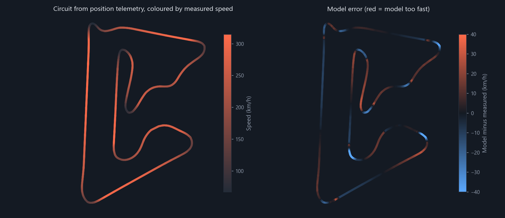
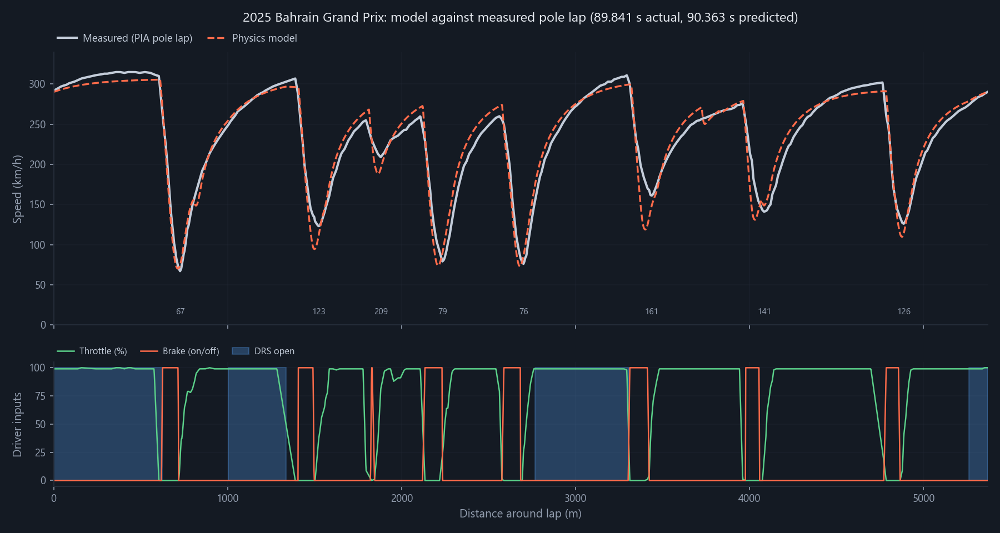
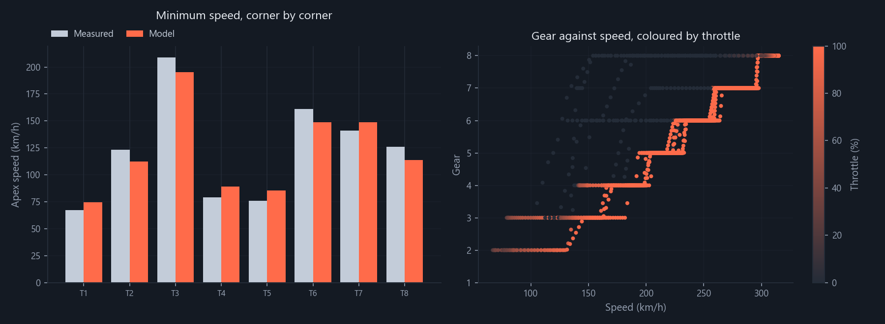
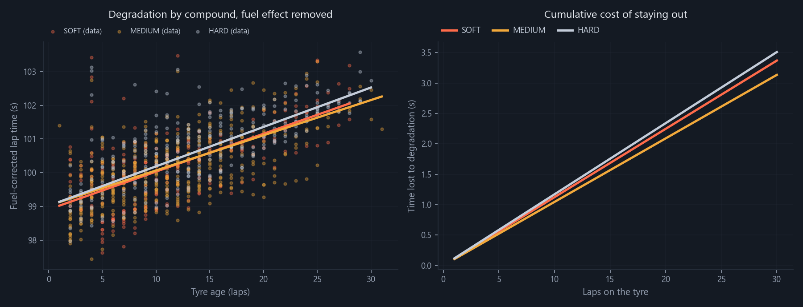
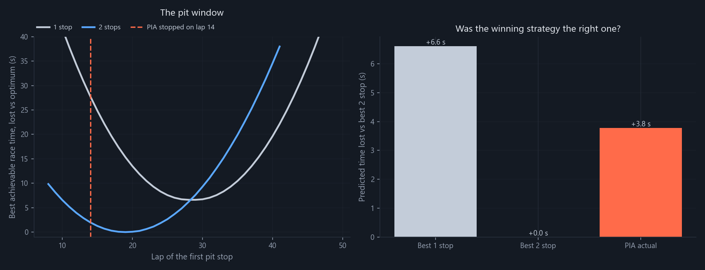

An F1 Lap, Predicted and Checked
A physics lap time model and a tyre degradation model, both developed from first principles and validated against telemetry from the 2025 Bahrain Grand Prix. The lap model predicts the pole lap to within about 1%, holds that accuracy on sections of track it was not fitted to, and the strategy model places the winning strategy 3.8 seconds from its calculated optimum.
Seeking graduate engineering roles. | Graduating July 2027 | Get in touch
Interactive lap simulation
The solver below is the same model, ported to JavaScript and running in your browser on circuit geometry derived from position telemetry. Change any parameter and it re-solves the lap straight away. The solid grey line is the measured pole lap and the dashed red line is the car you have configured. Hover or tap the chart to read both speeds at any point on the lap.
Worth trying: take downforce off and watch straight-line speed rise while every corner slows. Add grip and see which corners respond most. Take mass off and notice how little you get back compared with the same change made aerodynamically.
Rationale
A lap time model is worth nothing until you know how wrong it is, and the only way to find out is to check it against a real lap. Formula 1 publishes enough telemetry to do that: speed, throttle, brake, gear, DRS and car position, sampled through every lap of every session.
This project therefore has two parts. The first predicts a qualifying lap from physics and compares it corner by corner against the measured lap. The second fits a tyre degradation model to a full race and evaluates whether the winning strategy was the quickest available.
Part one: the lap
Circuit geometry from telemetry
The model needs circuit geometry, specifically the corner radius at every point. Rather than looking up a track map, I derived it from the car's own X and Y position telemetry. Curvature is computed analytically from the path:
kappa = |x' y'' - y' x''| / (x'^2 + y'^2)^(3/2) R = 1 / kappaThis requires second derivatives of noisy measured data, which amplifies noise considerably. Savitzky-Golay filtering addresses this by fitting a low-order polynomial over a moving window and differentiating that polynomial, rather than differencing the raw samples directly.

Solving the lap
The solver is quasi-steady and makes three passes: a cornering limit that accounts for downforce growing with speed, then a forward pass limited by power and traction, then a backward pass limited by braking, with longitudinal and lateral tyre demand sharing capacity through a friction circle. Drive goes through the rear axle only, which is taken to carry 60% of the tyre load under power, while braking uses all four tyres. DRS is taken from the real telemetry and applied as a reduction in drag where the driver had it open.
Mass (the 800 kg regulation minimum), power and braking limits are publicly available, and the rear axle load share is assumed from typical weight and aero balance. Grip, downforce and drag are not, so those three parameters are fitted to the measured speed trace. The remainder of the solution is determined by the physics and the circuit geometry.

Prediction, or just a fit?
Three parameters are fitted to the measured speed trace, and lap time is the integral of distance over speed. Fit the speed, and a close lap time is not independent evidence of anything. The obvious objection to the number above is that it is circular, and the objection deserves a test rather than a reassurance.
So the model is fitted on part of the lap and then asked about the part it has not seen. If it were memorising this particular lap, its error on unseen track would be clearly worse than on the track it was fitted to.
| Fitted on | Predicted | Lap time error | Speed error, fitted | Speed error, unseen | Ratio |
|---|---|---|---|---|---|
| First 50% | Last 50% | +0.40% | 13.2 km/h | 15.0 km/h | 1.14 |
| First 66% | Last 34% | +0.05% | 14.4 km/h | 13.9 km/h | 0.96 |
| First 75% | Last 25% | -0.22% | 14.6 km/h | 12.3 km/h | 0.84 |
| Last 66% | First 34% | +1.15% | 15.2 km/h | 12.7 km/h | 0.83 |
| Alternating 100 m blocks | The gaps between them | -1.07% | 14.1 km/h | 14.5 km/h | 1.03 |
Four of the five ratios sit at or below about 1.0. The worst is 1.14, when the model is fitted on the first half of the lap and asked about the second, so on unseen track it is at most a little worse than on track it was fitted to. That is the result that makes the lap time worth quoting: the geometry and the physics are carrying the prediction, not the fit.
The same table sets the honest precision. Re-fitting on different parts of the lap moves the predicted lap time between 0.05% and 1.15%. The headline 0.58% is one draw from that range, not a repeatable accuracy figure, and within about 1% is the claim this method actually supports.
The table above, and the grip sweep in the limitations below it, are both produced by f1_validate_outofsample.py, which runs the five splits and the sweep and prints exactly the numbers shown here.
Accuracy and limitations
Predicted lap time falls within 0.52 seconds of the measured lap. Speed trace RMSE is approximately 14 km/h, and corner-by-corner errors reach roughly 14 km/h in either direction.
What the fit cannot separate
Grip and downforce both set the cornering limit, and the speed trace cannot separate them. Holding the fit at different assumed grip levels and refitting the aerodynamics each time gives almost the same quality of fit across a wide range:
- μ = 1.30 with CLA = 10.9, speed RMSE 14.7 km/h
- μ = 1.48 with CLA = 8.5, speed RMSE 14.1 km/h
- μ = 1.60 with CLA = 7.6, speed RMSE 14.0 km/h
- μ = 1.80 with CLA = 6.3, speed RMSE 14.5 km/h
Downforce changes by a factor of 1.75 across that list while the fit quality changes by 0.7 km/h, which is nothing. The two parameters trade along a ridge, and the data does not say where on it the real car sits. There is a genuine optimum near μ = 1.6, so the model is not degenerate, but the precision is in the pair rather than in either number.
This is why the fitted values are not presented as measurements of the 2025 car. The sliders above open at one point on that ridge because the solver has to start somewhere. Moving grip and downforce in opposite directions will produce a lap that fits about as well, which is the limitation made visible rather than described.
Drag has a different problem. The fit returns CDA = 2.33 m2, and that is not a credible drag area for a 2025 car, which should sit nearer 1.5. With it the model tops out at 306 km/h where the real car reached 315. The model holds a constant 760 kW at every speed, with no gearshifts, no torque curve and no energy deployment limits, so it accelerates too hard through the middle of every straight, and the only parameter the fit can use to slow it down is drag. The number is absorbing missing powertrain physics, and should be read as an effective value for this model rather than as the car's drag.
An earlier version of the model drove through all four tyres. Restricting drive to the rear axle took the speed error from 17 km/h to 14 km/h but moved the fitted drag very little, which rules traction out as the cause.
Separating grip from downforce needs something the speed trace does not contain: a second configuration of the same car, a straight-line aerodynamic measurement, or tyre data. That is a data problem, not a solver problem, and no amount of further fitting will fix it.
The errors are systematic, and they point straight at what a quasi-steady model leaves out. It carries too much speed through the slowest corners because it assumes grip is available the instant it is asked for, when in reality the car needs time to transfer load and settle and the driver eases it to the apex. It is slow, by up to 14 km/h, through several of the medium and fast corners, where the real car gets aerodynamic behaviour that a point mass with one downforce coefficient cannot reproduce. There is no tyre temperature in it, no suspension, and nothing representing how a driver manages a lap.

Part two: the race
Data preparation
The race is 1,128 laps, and a large share of them tell you nothing about the tyre. Safety car and yellow flag laps are not representative racing laps. In-laps and out-laps include pit lane transit time. Laps completed in traffic measure the effect of the car ahead. Filtering to green-flag racing laps, excluding pit-affected laps, and removing laps more than 7% slower than each driver's own best leaves 979 usable laps.
Separating degradation from fuel burn
Lap time does not measure tyre condition directly, because two effects pull on it at once in opposite directions. The tyres wear, which costs time. The car burns around 1.7 kg of fuel a lap and gets lighter, which gains time, and the track rubbers in as the race goes on, which gains a little more. Fit degradation on its own and you will understate it, because the fuel effect has already cancelled part of it out.
So I fit both terms at once, in a single regression rather than one after the other:
laptime = driver_baseline + compound_offset + degradation(compound) * tyre_age
+ fuel_effect * lap_numberThe driver baseline term is more significant than it appears. Without it, the regression compares a front-running car on hard tyres against a midfield car on softs and attributes the difference to the compound. Assigning each driver an individual intercept reduced the model error from 0.821 s to 0.576 s, the largest single improvement made during development.
The fitted effect is 0.064 s per lap, so a lap at the end of the race is about 3.6 seconds quicker than the same lap at the start, tyres being equal. That is about 0.038 s per kilogram, close to the usual rule of thumb of 0.03 to 0.035, and consistent with a car shedding around 100 kg of fuel. The term is labelled fuel, but it is a coefficient on lap number, so it also contains track evolution and the regression cannot tell the two apart.

Limits of the fit
The model resolves base pace correctly, with the soft compound quickest and the harder compounds progressively slower, as expected. It does not resolve degradation rates between compounds. All three return values close to 0.1 seconds per lap, and the hard compound returns a marginally higher rate than the soft, which is not physically credible.
The likely reason is that compound allocation is not random. Compounds get used in particular phases of a race, in particular track and traffic conditions, and by particular cars. A linear model fitted to one Grand Prix cannot pull those apart from the behaviour of the tyre. Fixing it would need several races pooled together and a stint-level fit rather than a lap-level one. Treat the degradation rates as indicative and nothing more.
Strategy evaluation
Pit loss was measured from the race itself rather than assumed, stop by stop: each driver's in-lap plus out-lap, less twice the median of the same driver's clean laps within five laps either side, using only the 28 stops made under green flags. The median is 23.0 seconds, with an interquartile range of 22.1 to 24.5. An earlier version compared field-wide medians against the quickest fifth of all laps and included safety car stops, which overstated the loss at 26.1 seconds. With that, the model enumerates every legal strategy, including the rule that a dry race requires two different compounds, and ranks all 14,532 of them.

The model says a two-stop was correct, that the ideal shape was three roughly equal stints of about 19 laps, and that the best available one-stop would have cost around 6.6 seconds. Piastri, who won, stopped on lap 14 and ran 14, 18 and 25. The model scores that at 3.8 seconds off its own optimum, over a race lasting more than 94 minutes: an error of roughly 0.07%.
That comparison needs a caveat. Piastri's first stop, on lap 14, was a free choice under green flags. His second, on lap 32, was not: the safety car came out on that lap and he pitted under it. The 3.8 seconds therefore compares a plan made with no interruptions against a race that had one, and the lap of the second stop says nothing about what McLaren would have chosen in a clean race. The first stop is the fairer test, and lap 14 sits two laps before the window the model considers free.
A model built from public data lands within a few seconds of what a team with far more information actually did. The flat region in the left-hand plot shows why: any first stop between lap 16 and lap 22 costs less than a second, so the exact lap was never the decisive call. Track position and traffic matter more than the theoretical pace left on the table, and this model represents neither.
Interactive strategy calculator
The same calculation, running in the browser. Setting the tyre behaviour and pit loss causes it to evaluate every legal one and two stop strategy, identify the quickest, and plot the resulting pit window.
A note on the starting values. Pit loss, fuel effect and the soft compound's base pace are taken straight from the Bahrain fit. The compound ordering is not: as set out above, the regression could not separate degradation between compounds and returned the hard degrading faster than the soft, which is physically wrong. Rather than ship a default that is known to be backwards, the sliders open on a physically ordered set consistent with the fit's magnitudes, with the soft degrading fastest and the hard slowest, and the compound pace gaps widened to the roughly half a second per step that a real Bahrain weekend shows. The raw fitted numbers are the ones quoted in the section above, and every value here is a slider, so the fit output can be dialled back in.
Worth trying: push the pit loss above about 30 seconds and the one stop becomes optimal. Drop the hard compound degradation rate and the shape of the best strategy changes completely.
Part three: uncertainty
Everything above assumes the race runs to plan. Real races do not. A pit stop varies by more than a second and occasionally goes badly wrong, one set of tyres is not quite the last set, and roughly two races in five throw a safety car that rearranges the order for reasons nobody predicted. A strategy that is quickest on paper is not automatically the one that wins most often.
So the useful question is not "which strategy is fastest". It is "which strategy wins most often, and what does it cost me when it goes wrong". That is a distribution, not a number, and the way to get one is to run the race a few thousand times. The one, two and three stop strategies below are each optimised on the mean parameters first, then raced against each other through identical sampled races.
What varies, and why
Tyre life and the cliff. Degradation is not linear to the end of a stint. Each compound has a usable life, and beyond it the loss grows quadratically as the tyre goes off. This matters more than any other choice here: with purely linear degradation a long stint is only linearly slower, and the one stop looks far safer than it really is. The cliff is what makes an over-extended stint genuinely expensive.
Two separate sources of tyre variation. A correlated, per-race term covers track and car condition on the day. It moves the absolute lap time but affects every strategy equally, so it mostly cancels in a head-to-head. An independent per-set term covers the fact that no two sets are identical. That one does not cancel, and it is why stopping more often is not free even when the pit loss is small: a three stop strategy takes on four sets, and so four independent draws.
Pit loss is skewed, not symmetric. A good stop cannot save five seconds, but a cross-threaded wheel nut can cost fifteen. The distribution is a normal core plus an occasional slow stop and a rare disaster, because a symmetric normal would quietly understate the risk of stopping more often.
Safety car hazard is not uniform. The opening laps carry several times the rate of the rest of the race, since that is when the field is closest together and the tyres and brakes are coldest. A large part of the strategic option value sits in those first two laps.
What actually decides it
The interesting effect is not that a safety car slows everyone down, because it slows the whole field equally and cancels out of a comparison. It is that a stop taken under a safety car costs a little under half of a green flag stop, and under a virtual safety car around seventy per cent of one. A strategy still holding a stop when the caution appears collects that discount. A strategy that has already stopped collects nothing.
That makes part of a strategy's value an option value, and a fixed plan cannot capture it. So the simulation pits reactively: if a caution period arrives, the current stint is mature enough, and a stop remains, it takes the stop there instead of at the planned lap. Every strategy faces the identical sampled race, the same interruptions and the same drawn pit losses, so the comparison is decided by the strategies rather than by the random number stream.
Pit stop
Race interruptions
Tyre life
Tyre variation (means are set in the calculator above)
Simulation
| Strategy | Quickest | Median | 5th to 95th | Bad day (99th) |
|---|---|---|---|---|
| One stop– | – | – | – | – |
| Two stops– | – | – | – | – |
| Three stops– | – | – | – | – |
Running...
Worth trying: set both safety car rates to zero and the ranking collapses back to raw pace, which is what the deterministic calculator already told you. Put the early race safety car rate back up and the strategy still holding a stop starts winning races it has no right to win on pace. Drop the cliff severity to zero and the one stop becomes far too attractive, which is exactly the error a linear degradation model makes. Widen the slow stop percentage and watch the three stop tail stretch, since it is exposed to that risk three times.
What it does not do
- There are no other cars. No track position, no traffic, no undercut and no dirty air, and in a real race those frequently matter more than the pace left on the table. This is one car against the clock under uncertainty, which is a useful question but not the whole one.
- Safety car laps are not slowed in absolute terms. The effect is common to every strategy, so only the change in pit loss is modelled. That keeps the comparison honest but means the absolute race times are not realistic.
- Tyre warm-up is ignored, so an out-lap is costed the same as any other lap. In reality the first lap on a new set is slower, which slightly favours stopping less often.
- The compound behaviour is only partly measured. The fit to a single race resolved base pace but could not separate degradation between compounds, returning the hard degrading faster than the soft. The defaults here therefore use a physically ordered set rather than that result, which means the compound ordering is an assumption in this model and not a finding from the data.
- Tyre life is treated as a fixed number of laps rather than something driven by energy through the tyre, so driving style, fuel load and track temperature do not shift it.
Relevant skills
- Developing a physical model and validating it against measured data, including quantifying and reporting its limitations.
- Processing experimental telemetry: filtering, resampling, differentiating noisy signals, and identifying which data are not valid measurements.
- Identifying confounded effects and accounting for them within the regression.
- Converting a fitted model into a decision, with the confidence limits of that decision stated.
The lap model and the stint and strategy model, each implemented twice. The Python versions use FastF1 to pull the session data and reproduce every figure on this page. The MATLAB versions (f1_lap_model.m, f1_stint_model.m) carry the same solver and the same regression, reading the extracted circuit geometry and cleaned lap set from data/ so they run without a FastF1 install. Session download stays in Python because FastF1 has no MATLAB equivalent. The interactive version above is a JavaScript port of the same solver, since neither Python nor MATLAB runs in a browser.